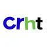

AIT · Internal AI ProgramCrescentRating & HalalTrip
Internal AI Capability
Estimating Token Usage & Comparing LLM Delivery Options
Prepared for senior management, department heads & non-technical stakeholders
Internal & Confidential · September 2026 · v1.0
The Situation, at a Glance
~30 employees use AI across departments, including 6 developers using Claude Code daily. Current expenditure is ~$1,095.80/month, comprising fixed SaaS subscriptions and unmonitored API usage.
No unified view of true AI cost. At 190M–380M tokens/month, unmonitored usage spikes, and heavy “vibe coding” by developers competes with everyday chat and copywriting needs.
Primary strategy. A hybrid dual-tier model. Self-host Qwen3.8-27B on bare-metal as the daily workhorse, keeping a strictly monitored frontier API (Claude/Qwen) as an escalation layer for complex engineering.
Alternative strategy. If data sovereignty requirements are relaxed, an API-Native path routes all traffic through highly discounted third-party endpoints (DeepSeek/OpenRouter), dropping monthly AI infrastructure spend under $100.
The primary strategy yields over $860/month in gross infrastructure savings, zero marginal cost per query for daily tasks, and full data sovereignty for proprietary IP. The alternative strategy maximizes financial ROI but sacrifices IP security.
Deploy a Hetzner GEX45 running Qwen3.8-27B to secure our codebase, configure a metered Claude/Qwen escalation gateway, and cancel all redundant flat-rate SaaS seats across the organization.
“Should we self-host, or keep paying for commercial AI APIs?”
Answer: No single option wins outright — the right answer depends entirely on our data privacy appetite.
Commercial APIs are fastest
Instant access to frontier models, but data leaves our perimeter and costs scale exponentially with heavy “vibe coding” volume.
Self-hosting protects our data
Proprietary code and HalalTrip travel data never leave company hardware — critical for the dev team's daily workflows.
Frontier reasoning still matters
Complex, multi-file engineering refactoring sometimes requires a higher reasoning ceiling than a local 27B model can deliver.
The Status Quo: Commercial APIs & Subscriptions
ChatGPT Plus
Claude Team
Google One AI Pro
Claude API
No migration cost or setup time · Instant access to frontier-grade models.
Costs scale directly with vibe-coding volume · No ceiling on a heavy usage day · Proprietary code & travel data leave company hardware boundaries.
Verdict: Familiar and easy, but the least private and most exposed to ongoing cost spikes as token volume scales.
Evaluating the Hardware Alternatives
Why the alternative infrastructure setups don't fit our exact needs.
Before arriving at our recommendation, we evaluated the full spectrum of delivery models:
Decentralized P2P Hardware
Vast.ai RTX 4090s. Highly cost-effective for 24GB or 96GB setups, but relying on marketplace consumer GPUs introduces enterprise reliability and strict compliance concerns.
Serverless Cloud GPUs
GCP Cloud Run L4. Scales to zero to save money (~$170–$565/mo), but introduces 30–90 second cold-start delays and queue-bound concurrency bottlenecks for the dev team.
Extreme Bare-Metal
Hetzner GEX131 — 96GB. Offers maximum local capability to run frontier 70B models, but at ~$1,315/month it is massive financial overkill for a 30-person team.
Verdict: Each of these hardware alternatives forces an unacceptable compromise on enterprise reliability, daily workflow concurrency, or budget.
The Primary Strategy: Hybrid Dual-Tier Architecture
Primary Workhorse
Hetzner GEX45 running Qwen3.8-27B for all 30 employees.
Escalation Layer
Metered Claude / Qwen API for ultra-complex engineering.
SaaS Sunset
Complete cancellation of existing ChatGPT, Claude and Google seats.
Maximizing privacy and cost-efficiency while retaining access to frontier intelligence.
Delivers zero-trust data privacy for daily operations · Drops infrastructure costs to ~$235/month · Unthrottles developer IDEs.
Requires initial setup of vLLM and Open WebUI · Needs strict monitoring discipline on the escalation gateway to prevent cost leakage.
Verdict: The right-sized sweet spot. Best balance of cost, absolute data privacy, and engineering capability.
The Alternative Strategy: API-Native Workhorse
Primary Workhorse
DeepSeek V4.1 Flash (Official API) or Qwen3.8-27B (OpenRouter).
Escalation Layer
Metered Claude Opus 5 API for ultra-complex engineering.
SaaS Sunset
Complete cancellation of existing ChatGPT, Claude and Google seats.
If data sovereignty is not a business constraint, route all traffic through highly discounted APIs.
Mathematically the cheapest operational model, dropping baseline AI spend to an estimated $50–$90/month. Eliminates upfront hardware setup fees and server maintenance entirely.
Surrenders all data sovereignty. Proprietary algorithms, vulnerability logs and Halal travel research fed into developer IDEs during “vibe coding” will leave the organizational perimeter.
Verdict: Maximizes raw financial ROI but sacrifices IP security. Only viable if the business accepts the risk of third-party data transmission.
Decision Matrix
Scoring the primary deployment paths (1 = poor, 10 = excellent)
| Deployment Path | Cost Efficiency | Data Privacy | Capability | Ops Maintenance | Ease of Use | Overall |
|---|---|---|---|---|---|---|
| Status Quo (SaaS + API) | 4 | 3 | 9 | 9 | 9 | 6.8 |
| API-Native (Max ROI) | 10 | 1 | 8 | 9 | 9 | 7.4 |
| Hybrid Dual-Tier (Recommended) | 9 | 9 | 9 | 7 | 8 | 8.4 |
Cost
Status Quo scales unpredictably; API-Native is strictly the cheapest; Hybrid slashes fixed costs while capping variable spend.
Privacy
Hybrid guarantees zero-trust data sovereignty for daily workflows; the others send proprietary IP to third parties.
Maintenance
Hybrid requires managing a single Hetzner server; the others require zero hardware maintenance.
Model Ranking Highlights
Top-ranked models by capability-per-dollar (SWE-Bench Pro/Verified + Open-Weight bonus)
| Model | SWE-bench Pro | Open Weight | Best Price/mo | Rank Score |
|---|---|---|---|---|
| DeepSeek V4.1 Flash | 52.60% | Yes | $88.00 | 81.56 |
| Qwen3.8-27B (Q4_K_M) | 61.70% | Yes | $50.00 | 49.24 |
| Kimi K3 | 63.20% | Yes | $494.00 | 47.95 |
| Claude Opus 5 | 79.20% | No | $1,492.50 | 47.52 |
| GLM-5 | 62.10% | Yes | $290.40 | 47.28 |
| Claude 5 Sonnet | 63.20% | No | $597.00 | 37.92 |
Reading the table
The Alternative API-Native strategy utilizes the top two mathematical scorers (DeepSeek / Qwen via OpenRouter). The Primary Hybrid strategy utilizes Qwen3.8-27B but hosts it locally to secure the open-weight privacy bonus.
Migration Roadmap (Primary Hybrid Path)
Infrastructure Setup
Provision Hetzner GEX45 node, install vLLM engine, and load quantized Qwen3.8-27B with a dedicated KV-cache buffer.
Application & Gateway
Deploy Open WebUI for staff, implement RBAC, and secure the commercial API keys inside a monitored internal gateway.
Developer Integration
Reconfigure IDEs (Claude Code) to point to the local Hetzner endpoint, optimizing prefix caching for massive codebase ingestion.
Onboarding & Sunset
Train all 30 employees on the new internal platform and immediately cancel the ~$192.80/month in redundant SaaS subscriptions.
Cost, Effort & Risk Comparison
Comparing the deployment paths (higher bar = worse; 1–10)
- •Status Quo looks easy today, but financial and IP-leakage risks compound as usage grows.
- •API-Native minimizes operational cost and effort, but maximizes IP-leakage risk for our codebase.
- •Hybrid Dual-Tier offers the lowest total cost of ownership that actively protects our proprietary data.
A Word of Caution: Risks to Watch
Without gateway monitoring, the “occasional” frontier API becomes a routine crutch, erasing our cost savings.
Under the Hybrid model, one self-hosted GPU node (Hetzner GEX45) with no automatic failover means a server outage halts internal AI tools.
If employees bypass the internal platform and manually paste code into public commercial bots, our sovereignty guarantees disappear.
If vLLM prefix caching is misconfigured on the Hetzner node, heavy developer codebase ingestion could freeze generation speeds for marketing/admin staff.
Five Questions, Five Clear Answers
The right AI infrastructure for every workload.
Secure the daily work. Escalate only when it counts.
Discussion & next steps
Internal & Confidential — AI Capability Strategy · September 2026